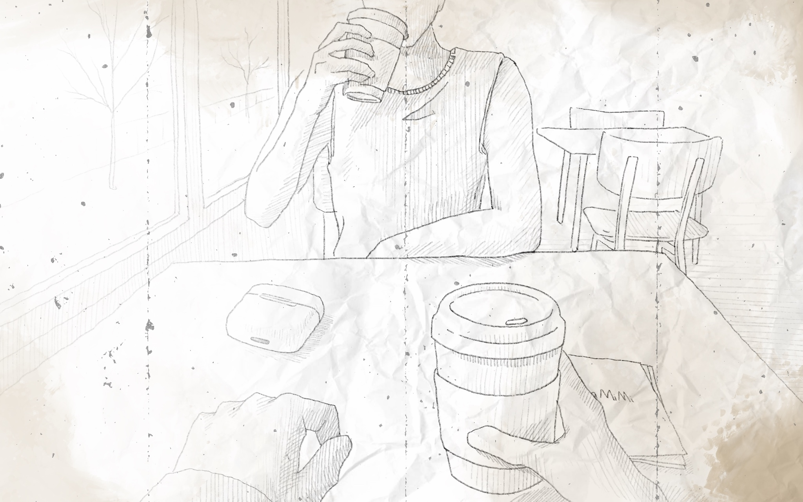
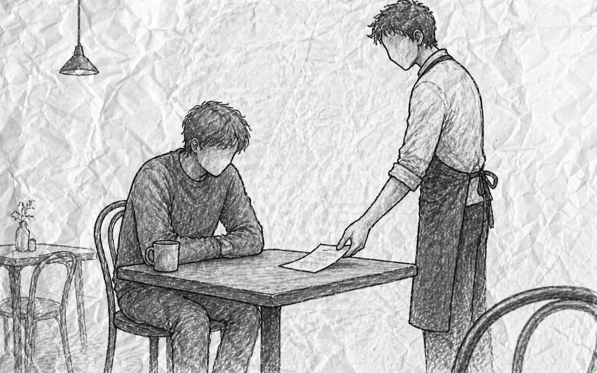

Case File
Close


An Interactive Investigation
The Last
Witness
Enter
01 / 03
← Back
Continue →
Location · The White Room
The Last Witness
Click anywhere or press Space ›
◈
Place the object on the reader
All fragments recovered
The investigator is waiting.
What do you tell him?
Tell him what I remember
I can't be certain
This choice cannot be undone
Ending A
Begin Again
Ending B
Begin Again